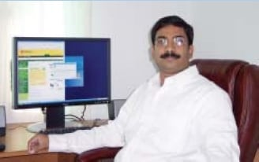

Dear Prospective Students, "Our vision of being a state of the art institution of engineering in pursuit of excellence has come true” – endorsed by none other than MHRD/NIRF of the Government of India which ranked CVR among the 101-150 rank group in the country and within top 3 private colleges in Telangana This is a very special year for the college since we have accomplished our goal of being in the top 3 private engineering colleges in the state. We have come a long way since our humble beginning in 2001 and made this possible within a record time. On behalf of the management I thank our faculty, staff, students, employers, industry partners, alumni, affiliating university (JNTUH) and other stakeholders. I am really excited to inform you that CVR continues to attract the best students and faculty, the key pillars of any premier educational institution. The college has been awarded the National Employability Award for the seventh year in a row, a feat accomplished only by CVR. While we are very pleased and thrilled with the developments at CVR over the past 17 years, we are not resting on our laurels but continuing to work hard in making CVR one of the premier technical institutions in the Country by being in the top 100 very soon. CVR is the only college in entire Telangana that is awarded NBA accreditation for its courses for the third time in a span of 15 years. CVR is the youngest in the top 3 colleges of Telangana reflecting its vision of “In pursuit of excellence”. It is the expectation of the academic community that CVR will be among the top 3 preferred colleges amongst all colleges in Telangana in the forthcoming EAMCET-2018 counseling. I am also very pleased to inform you that the 14th batch of CVR will be graduating in June 2018 and the placement activity continues to create records, year after year. The college is not only among the top 5 colleges in terms of placement percentage and the number of offers but also in the top 2 colleges in terms of offers greater than Rs. 5 Lakhs. A record breaking 40 students of the graduating batch got offers higher than Rs. 7 Lakhs and 75 students got offers higher than Rs. 5 Lakhs resulting in probably the highest average salary of Rs. 3.90 Lakhs in the entire state. The highest salary of Rs. 24 Lakhs is the highest in the state for peer group of colleges. CVR has the unique distinction of having two former Vice-Chancellors and a Rector of JNTU, a former Dean of Engineering from OU and many industry stalwarts at the helm of affairs. CVR was also rated AAA+ by Careers 360, 4.5/5.0 by Career Connect and within top 100 of the country by Outlook, better than decades old institutions. I am very happy to inform you that most of the senior faculty, including our Director and Principal, continue to be associated with the college and the Director has completed 15 years of service at the college. The college is a great place to work and has the highest faculty retention with above 100 staff members having completed 10 years. The college has also reached an important milestone this year – by crossing 550 staff on its rolls including teaching and non-teaching, among the highest in the state. The college also has a record number of PhDs (close to 100), Professors and Associate Professors. We are very excited to have dedicated academicians who share our vision and passion to be part of our institution. We invite you and your parents to visit the campus of CVR College of Engineering and look at its infrastructure, learn about its faculty, etc., before you decide which college to pursue your engineering degree course. I am sure you will be excited to join CVR College of Engineering. We have great promoters, best-of-class infrastructure, top-class faculty and are providing the best possible education. This is history in the making, so join us in making the CVR College of Engineering a pre-eminent technical institute in the country. Raghava Cherabuddi, Ph.D. Want to contact the President & Chairman, send an email to: raghava@cvr.ac.in